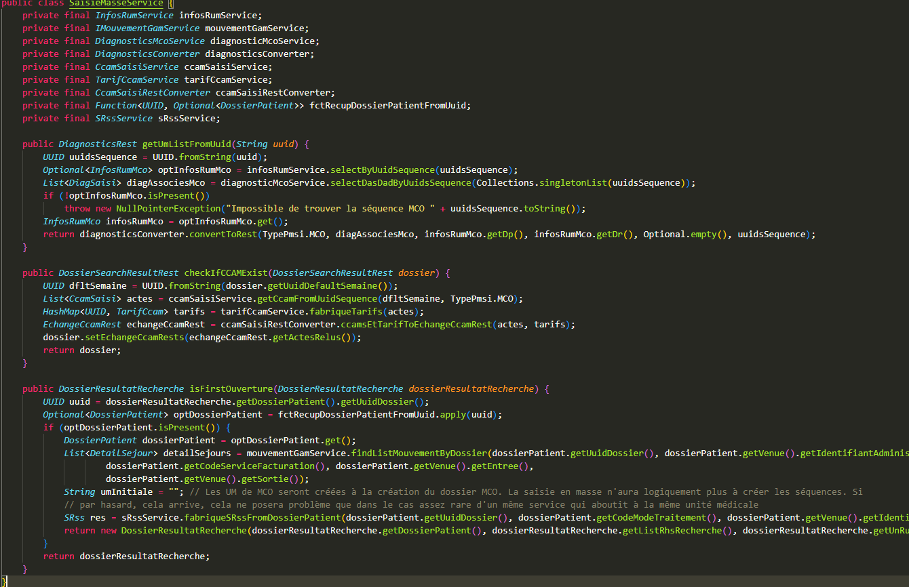
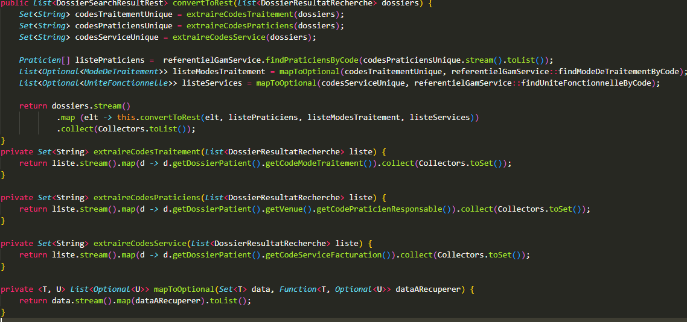

Le projet BLPMSI est une application de type PMSI (Programme de Médicalisation des Systèmes d'Information) largement utilisée dans une gamme d'applications sanitaires, tant publiques que privées. Il s'agit d'une refonte améliorée d'une ancienne application développée sous PowerBuilder. Cette nouvelle itération repose sur une architecture de microservices, permettant une communication fluide avec d'autres applications dans le cadre d'une chaîne complète d'opérations. De la création de dossiers à leur codage et leur facturation, BLPMSI orchestre l'ensemble du processus de manière efficace et intégrée, offrant ainsi une solution robuste et complète pour la gestion des données médicales et administratives.
Les objectifs du projet BLPMSI sont multiples et ambitieux. Tout d'abord, il vise à transformer l'ancien produit en un modèle SaaS (Software as a Service), ce qui permettra à l'entreprise de générer des revenus récurrents tout en offrant une flexibilité accrue à ses utilisateurs. Cette transition vers le modèle SaaS implique également une refonte de l'architecture pour rendre l'application plus agile, évolutive et accessible à partir de divers appareils connectés.
Le développement du projet BLPMSI s'inscrit dans un cadre agile, avec des sprints de trois semaines. Chaque sprint est rythmé par les différentes cérémonies agiles, telles que la réunion de planification, la réunion quotidienne, la revue de sprint et la rétrospective de sprint. Cette approche agile permet une gestion itérative du développement, favorisant la flexibilité, la réactivité et l'adaptabilité aux besoins changeants du projet.
En tant que développeur sur le projet BL.PMSI, je suis constamment plongé dans un flux de tickets, traitant environ 15 tickets par sprint, couvrant une gamme variée de bugs à corriger et de fonctionnalités à ajouter. Parmi ces tâches, certaines se sont révélées particulièrement formatrices, contribuant à mon développement professionnel de manière significative. Voici quelques-unes des réalisations les plus marquantes qui ont enrichi mon parcours sur le projet BL.PMSI et ont renforcé mes compétences.
Mon premier développement sur BL.PMSI a été l'ajout d'une table de paramétrage pour les établissements dans l'application. Cette tâche m'a permis d'explorer le dialogue entre le front-end et le back-end, basé sur Spring. J'ai également géré les actions différenciées selon le secteur configuré (PUBLIC ou PRIVÉ), ce qui a été une étape cruciale pour intégrer mes premières méthodes CRUD (Create, Read, Update, Delete) dans l'application.
Par la suite, j'ai été fortement impliqué dans le développement de fonctionnalités clés, notamment la saisie et la validation en masse des dossiers de MCO (Médecine, Chirurgie, Obstétrique). Cette fonctionnalité, auparavant absente de l'ancienne application en PowerBuilder, a grandement amélioré l'efficacité des secrétaires TIM (Traitement de l'Information Médicale) en leur permettant de saisir rapidement des diagnostics et des actes CCAM (Classification Commune des Actes Médicaux) sur de multiples dossiers. La validation en masse a permis de gagner un temps précieux tout en assurant la conformité et la précision des informations saisies, représentant ainsi un pas significatif vers l'optimisation des flux de travail et la réduction de la charge administrative. Cette contribution a abouti à une expérience utilisateur plus efficace et satisfaisante.
En outre, j'ai acquis de nouvelles compétences grâce au projet, notamment en matière de déploiement. Avec le déploiement effectué via Ansible, j'ai pu approfondir ma compréhension des processus de déploiement automatisé et de gestion d'infrastructure. Cette expérience m'a non seulement enrichi sur le plan professionnel, mais a également contribué à renforcer ma polyvalence et ma capacité à résoudre des problèmes de manière efficace dans des environnements techniques variés.
Cela m'a également permis de devenir plus autonome en cas de problèmes survenant en production, me donnant la confiance nécessaire pour résoudre les incidents et assurer la stabilité des systèmes en toute circonstance.

Service permettant de réaliser la saisie en masse

Optimisation appel base de donnée
En parallèle du développement des fonctionnalités, j'ai également joué un rôle dans la mise en place de l'architecture de microservices, en utilisant des technologies telles que Java avec Spring pour le back-end, Angular pour le front-end, et Feign pour faciliter la communication entre les différents microservices.
En regardant en arrière sur mon parcours au sein du projet BLPMSI, je remarque une évolution significative dans mes compétences et mon approche du développement. Quand je suis arrivé, j'avais des lacunes du côté du front-end, et je n'ai peut-être pas sollicité suffisamment l'aide du développeur front-end pour les combler rapidement. Si je devais recommencer, je n'hesiterai pas à demander de l'aide et à tirer pleinement parti des compétences complémentaires de l'équipe pour garantir une progression plus rapide et plus équilibrée dans mes connaissances techniques.
En conclusion, le projet BLPMSI représente bien plus qu'un simple défi technique. C'est une opportunité passionnante et stimulante qui m'a permis de combiner l'innovation technologique avec une approche agile pour fournir une solution complète et efficace de gestion des données médicales et administratives. Mon implication active dans ce projet m'a non seulement permis de contribuer au développement d'une application de grande envergure, mais surtout, elle m'a offert une opportunité précieuse d'apprentissage et de croissance professionnelle.
Grâce à cette expérience, j'ai pu élargir mes compétences techniques en travaillant avec des technologies de pointe telles que Java avec Spring, Angular et Feign, tout en perfectionnant mes connaissances en développement d'applications web et en architecture de microservices. De plus, en collaborant étroitement avec les membres de l'équipe dans un environnement agile, j'ai développé des compétences essentielles en communication, en résolution de problèmes et en gestion de projet.
PETRAU KILLIAN